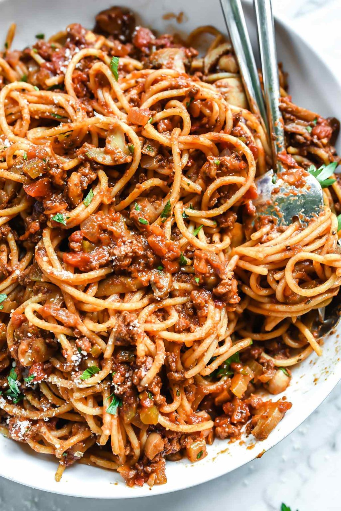

Slightly Fancier Spaghetti and Meatsauce

Fancy Spaghetti
Putting a little more effort in your spaghetti can go a long way!
Use this recipe to step up from just heating up jar sauce
Jacob taught me this and I think I'm writing it down correctly
Ingredients
- A jar of your favorite spaghetti sauce
- A package of noodles
- 1 lb ground beef (not rolled)
- 2 cloves of garlic (minced)
- 1 cup Cooking wine
- 1 cup Beef broth
- Seasonings
- Red Pepper Flakes
- Salt
- Italian Seasoning/Oregano
- Fennel Seads (be careful!)
Steps
- Heat olive oil in a large sauce pan at medium high heat
- Add red pepper flakes and garlic cloves and stir for 1 minutes
- Add ground beef to skillet as a block
- Add salt to top and let it sit for a minute
- Chop up and brown
- Once the beef is browned, add the jar of sauce
- Add wine and broth
- Reduce heat until sauce is consistently simmering
- At this point, fill a large pot with water and start to boil it
- Add italian seasonings and stir
- Mostly cover with lid, leaving a crack to simmer and reduce liquid until sauce is back to its thick texture
- While the sauce is simmering and the water in the pot is boiling, add noodles and follow instructions on package
- When noodles are done, add a cup of noodle water to the sauce and reduce that, too
- Drain noodles in a colander while running cold water over them
- When the sauce is reduced sufficiently, add noodles to sauce and stir
- The sauce should stick to the noodles
- Serve and enjoy!
Home